Week 1 Challenge: reorganising a food cupboard
The Waste Not, Want Not workshop ended with four challenges being set.
For week 1, we had to choose a kitchen cupboard and spend some time reorganising it.
Why?
Obviously it looks nicer and who doesn’t want that?
There’s less chance of items cascading out – or is that just my cupboards?
The expectation is that a more organised food cupboard makes it easier to find the items you want so saves time.
If you can see what you’ve already bought, you won’t go out and purchase something unnecessarily. That means reduced expenditure and less chance of things being wasted.
Our starting position
The kitchen cupboards were allocated contents once the builders had departed and we have never bothered to review the setup since. We knew there was poor use of the available space, clutter, inefficiencies, hidden depths where aged produce lurked and many more horrors. But we also recognised that it was going to be a big job and no one was keen to tackle it…until Lagom came into our lives!
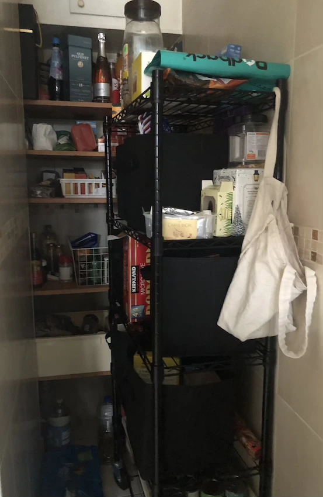A small L-shaped offshoot from the kitchen, that had been the route to a back door, contained two shelving units stacked with various foodstuffs. Let’s refer to it as the ‘pantry’. Some of the shelving was difficult to access. Attempts to impose order and use certain crates for particular items were frequently undermined in the frantic aftermath of a grocery delivery and the need to get things out of the way. It was far too easy to miss to stockpiles of x and buy more. Things could easily be overlooked and become inedible.
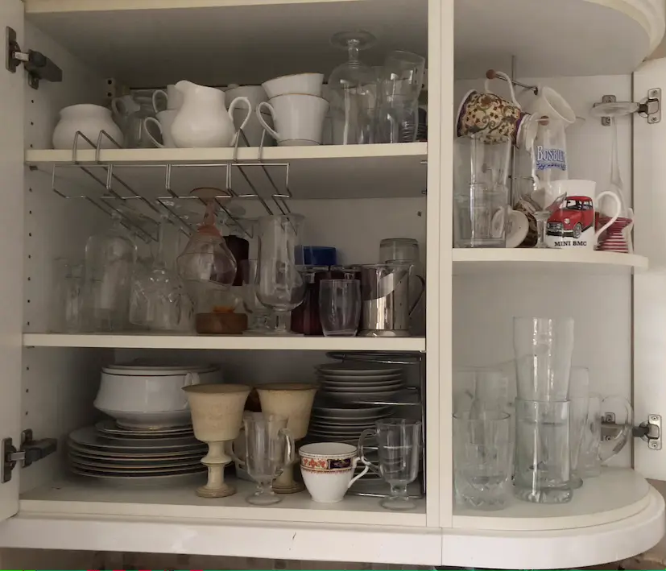 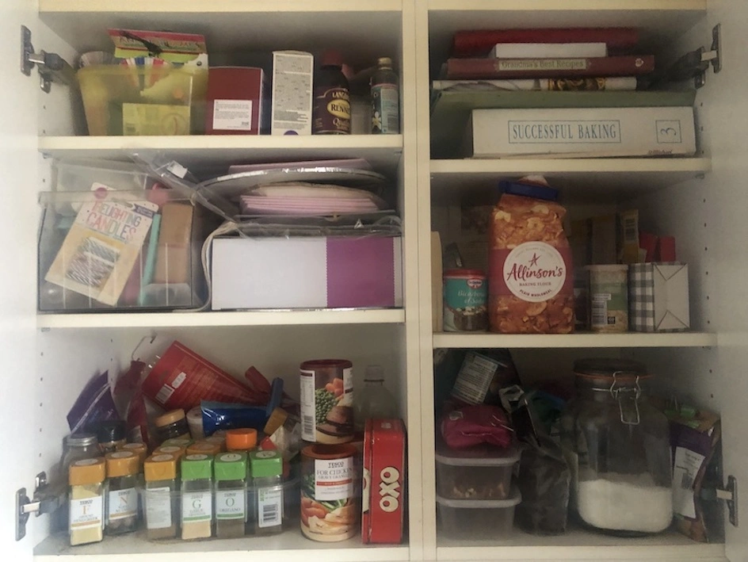 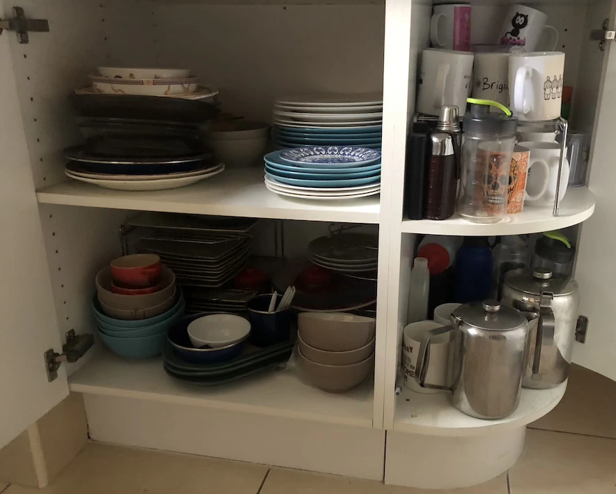
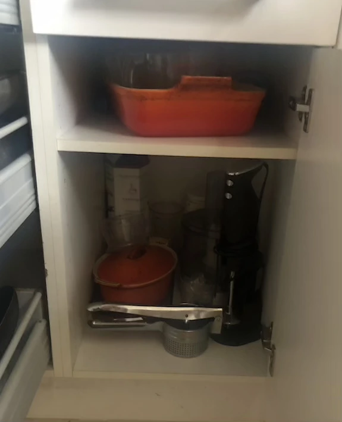 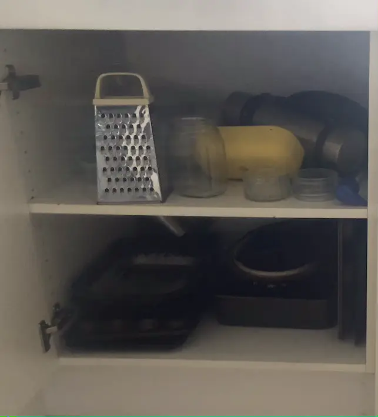 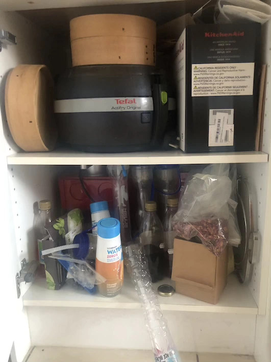
The cupboards in the kitchen itself were mostly given over to crockery, glassware, baking tins, appliances and miscellaneous ‘stuff’.
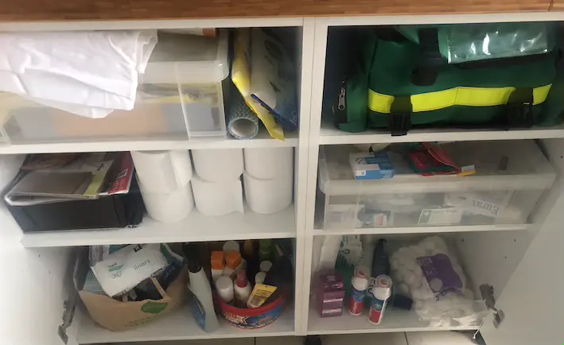 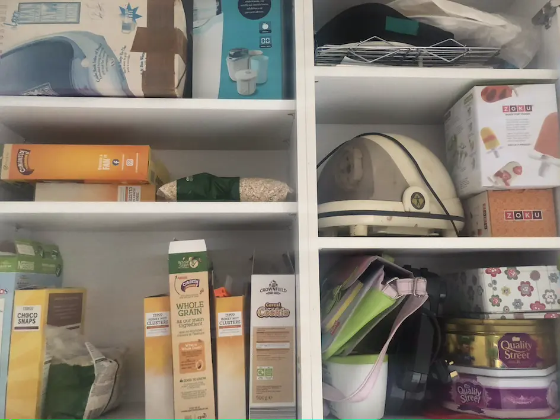
The cupboards in the utility room contained yet more ‘stuff’, some food, appliances, first aid kits and the like.
The kitchen table and various worktops also were used to store items that should have lived in cupboards.
The plan
The general idea was to store less frequently used items in the ‘pantry’. This would become the repository of appliances, rarely-used crockery and miscellaneous items that might be needed at some point and wouldn’t be disposed of – yet!
The food would be stored in a more visible, accessible manner, closer to its point of use.
The contents of cupboards would match the storage space available. No more stuffing things in and hoping they stay put when someone opens a door! And no more leaving unused space in the cupboards.
The aim in the first phase of reorganisation was to move everything around and assess the suitability of the changes.
The results
The first step was to allocate a cupboard for pet-related items. Some of the food and treats had previously lurked in the pantry. Some had established a presence on the kitchen table in a box. I'm still not sure whether it's ideal for it all to be in the utility room given some of the preparation occurs in the kitchen, but it's worth a try. Everything is in one place and tidier.
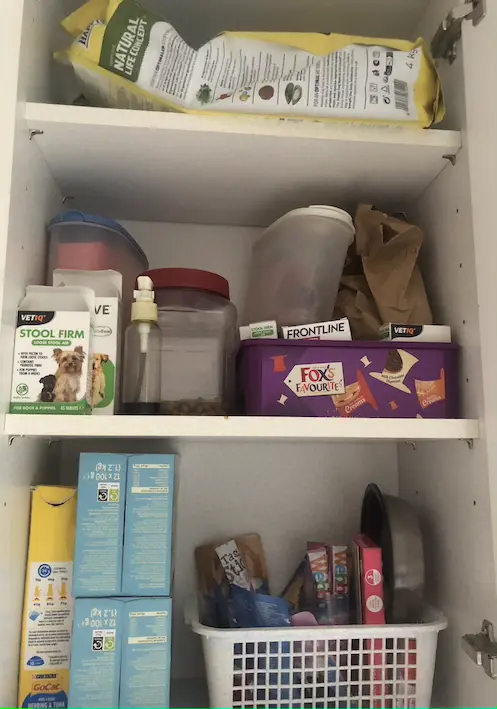To save hauling multiple cartons of milk through to the pantry and then back to the fridge, I decided that the milk, juices and hot beverage backup supplies would be stored in the utility room right next to the back door and the fridge. Less haulage and we can see at a glance when we're running short. We're less likely to become overstocked too.
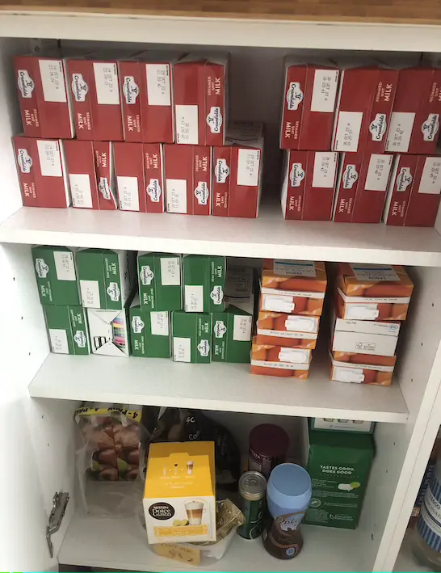 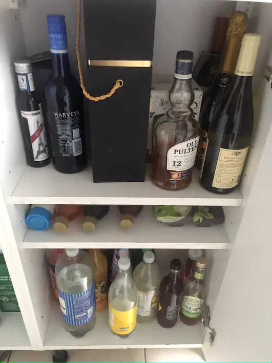 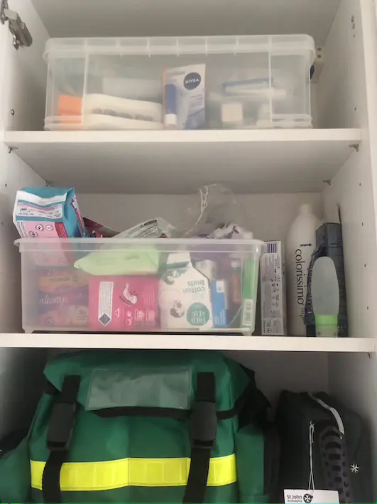
Other drinks bottles migrated to the utility room too. They used to live in the pantry, but will be more accessible in their new location, and more easily monitored.
Coralling all the first aid and toiletry supplies in a single cupboard in the utility room seemed like a good idea as well.
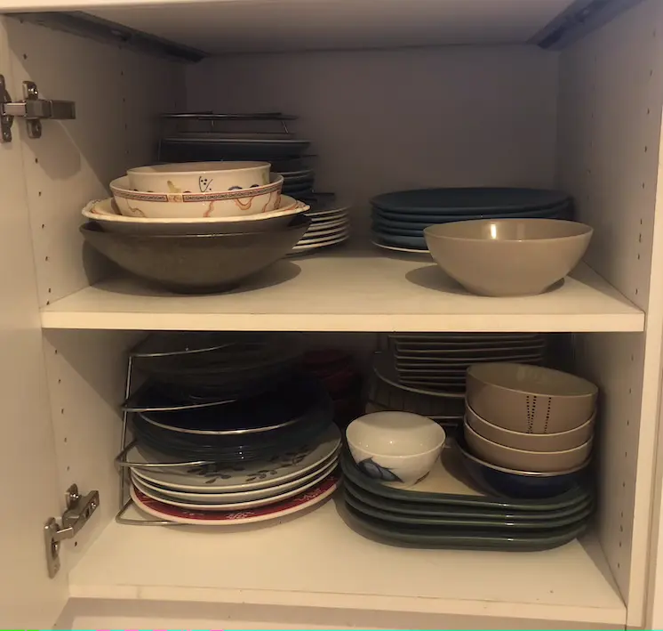 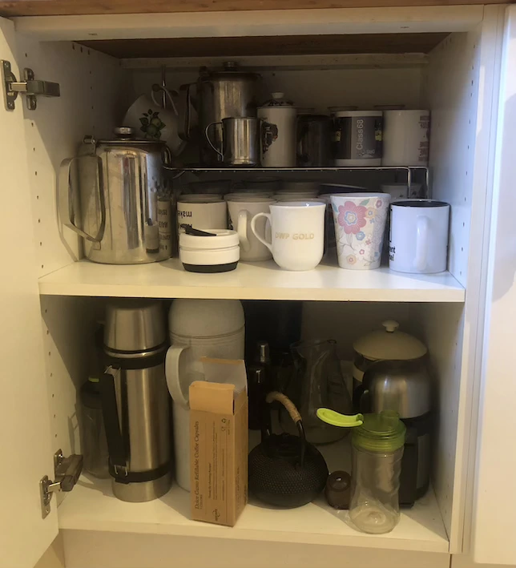 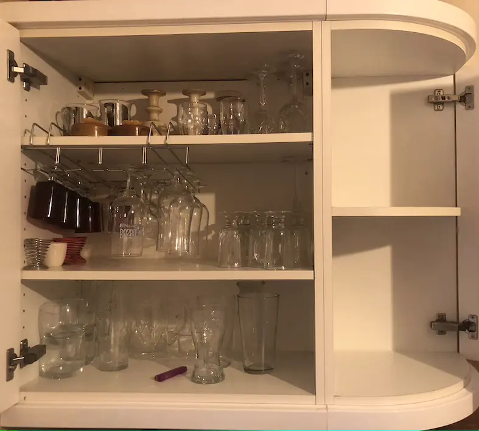
The plates and bowls migrated across the kitchen into a cupboard closer to where we cook and serve our meals.
The mugs had been crammed into a small cupboard. They've now been given more space and co-exist with the teapots and other drinks containers. They're positioned close to the kettle and coffee maker.
With the china dinner set stashed in the pantry until special guests arrive, there was more space to store all the glassware in a single cupboard, without too much stacking required.
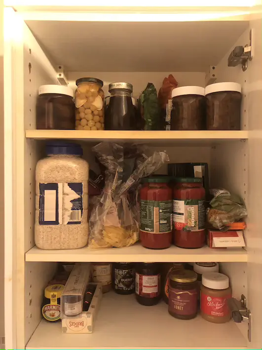 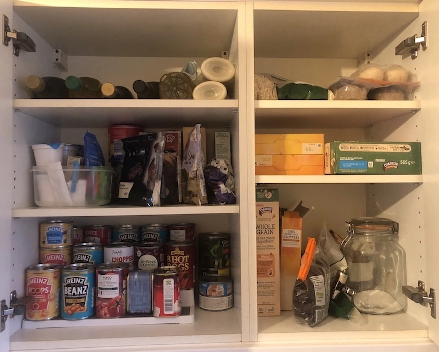 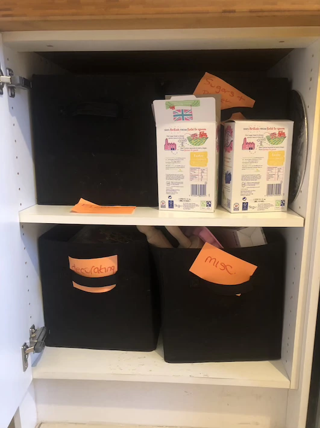
The cereals were moved into the kitchen, where they're prepared, near to the crockery.
The tins and other food stuffs were put into cupboards so they can be easily accessed and more easily monitored. All the baking and cake decorating paraphenalia were put into cube storage boxes to keep them tidy. I don't think this is how we'll keep things. We'll probably move some of this out into one of the empty cupboards and use storage boxes that use all of the available space. But it's fine for the time being.
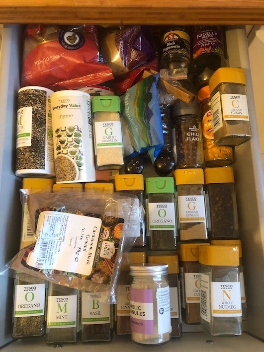 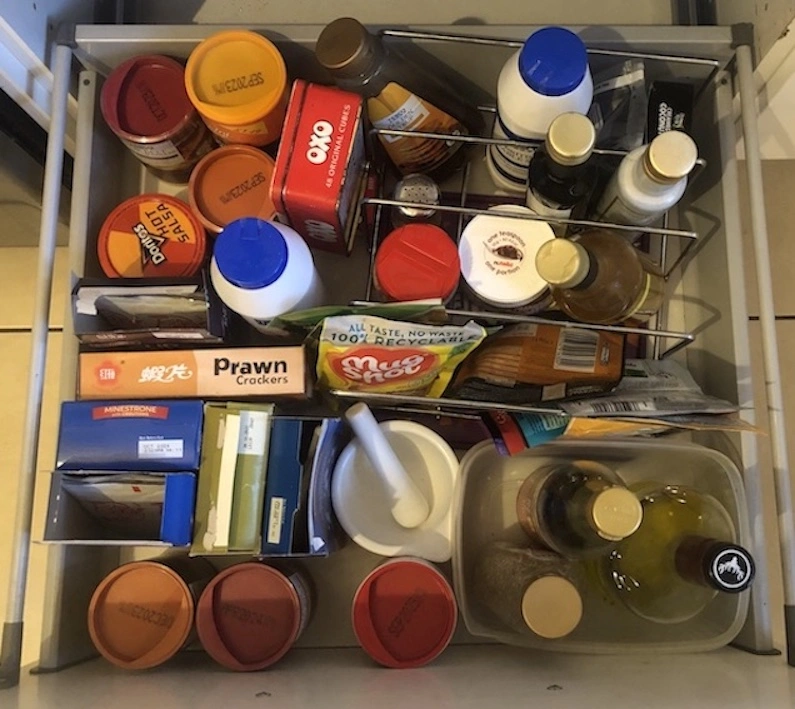
My favourite change has to be putting all the spice jars on display within a drawer. It's far easier to see what options we now have for flavouring our food. I'm hoping we'll make better use of the whole range of spices and, in the future, won't have multiple open jars of the same thing.
Another change that seems to have found widespread favour is storing all the oils, condiments, gravies, and the like, in a drawer beside the cooker. This had previously held a few frying pans. Poor use of space as they all now fit into the oven drawer.
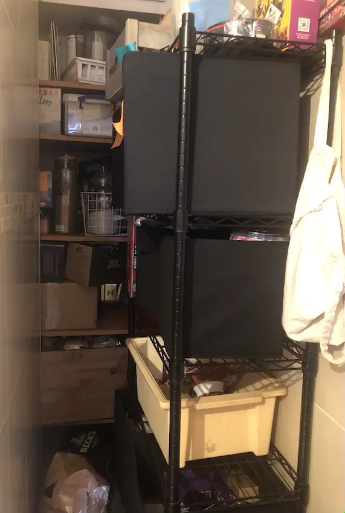The 'pantry' mightn't look too different. It still needs different storage boxes to make a visible improivement. However, we have less need to fight our way into the area as it only really contains those items that we rarely use.
Is that it?
It's an improvement, but we're not finished yet. A further phase will be to acquire appropriate storage boxes and containers to make the kitchen aesthetically pleasing and easy to maintain.
And we've freed up some cupboard space so now need to consider how best to use it.